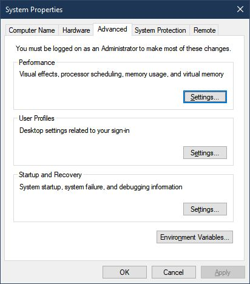
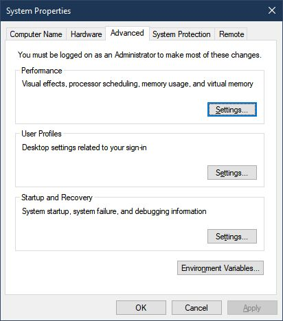
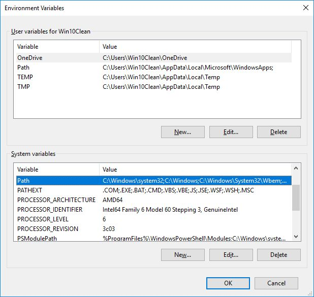
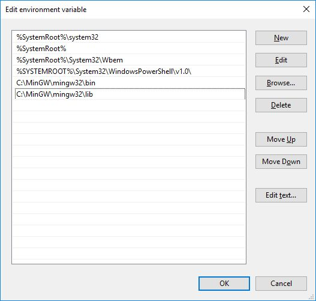

Install gfortran¶
To compile and run RocketCEA, users need to install gfortran .
Each operating system has its own approach.
CentOS/RHEL¶
From my testing on CentOS, gfortran the commands:
yum install epel-release
yum install gcc-gfortran
will install gfortran (You may need to be logged in as root.)
In order to link with python and use pip, you will also need:
yum install python-devel
yum install python-pip
OR
sudo yum install python-devel
sudo yum install python-pip
Note
The error message “not finding Python.h during compile.” indicates that the python devel library is required.
Presumably RHEL will be similar.
OpenSUSE¶
To install gfortran on OpenSUSE use:
sudo zypper install gcc gcc-c++ gcc-fortran
Similar to CentOS , OpenSUSE will need the following in order to link the compiled FORTRAN to python:
sudo zypper in python-devel # for python2.x installs
sudo zypper in python3-devel # for python3.x installs
Note
The error message “not finding Python.h during compile.” indicates that the python devel library is required.
MacOS/OSX¶
I had trouble using gfortran with python 2.7 on MacOS Sierra, however, python 3.7 seemed to work just fine with:
brew install gcc
brew install python3
pip3 install numpy
pip3 install genericf2py
Windows 10¶
Important
Windows users MUST put MinGW into environment PATH variable. (see: Windows PATH)
C:\MinGW\mingw64\bin OR C:\MinGW\mingw32\bin
and
C:\MinGW\mingw64\lib OR C:\MinGW\mingw32\lib
Windows 10 is the most complicated platform on which to set up gfortran.
Assuming that your user may need either the 32 or 64 bit compiler, I recommend using the SourceForge MinGW-w64 for 32 & 64 bit Windows.
Go to the site SourceForge MinGW-w64 for 32 & 64 bit Windows.
and download MinGW. At the time of this writing, the downloaded file is mingw-w64-install.exe.
Run mingw-w64-install.exe.
{kind=link}
After clicking Next, the settings screen will appear.
For 64 bit compilation, the settings that worked for me are shown below.

For 32 bit compilation, these were my settings.

A location for the MinGW install then needs to be selected. The default location is in C:\Program Files (x86)\mingw-w64... etc. However I recommend a simpler path like C:\MinGW so that, later on, setting the user’s environment PATH will be easier.

After several minutes of an Installing Files you should arrive at a successful finish screen.


When both 32 and 64 bit compilers are installed, and if you selected C:\MinGW as your install directory. You should have a C:\MinGW directory that looks like the one below.

Windows PATH¶
Important
Windows users MUST put MinGW into environment PATH variable.
C:\MinGW\mingw64\bin OR C:\MinGW\mingw32\bin
and
C:\MinGW\mingw64\lib OR C:\MinGW\mingw32\lib
Having installed gfortran , there are some options as to when and how to change the system’s PATH environment variable.
For 32 bit compilation, the following must be in the PATH:
C:\MinGW\mingw32\bin;
C:\MinGW\mingw32\lib;
for 64 bit compilation:
C:\MinGW\mingw64\bin;
C:\MinGW\mingw64\lib;
These can be added as-needed, for example:
set PATH=C:\MinGW\mingw32\bin;C:\MinGW\mingw32\lib;%PATH%
OR
set PATH=C:\MinGW\mingw64\bin;C:\MinGW\mingw64\lib;%PATH%
They can also be added by editing the system Environment Variables in the Control Panel.
Search for “environment variables” in the Windows 10 Search box and click on “Control Panel”
Once there, select “Environment Variables…”.
 

{kind=link}
The “Environment Variables…” Button will result in the screen below where either the System or User Variables can be edited.
Add the C:\MinGW path for Either the 32 or 64 bit compiler.
Important
Windows users MUST put MinGW into environment PATH variable. (see: Windows PATH)
C:MinGWmingw64bin OR C:MinGWmingw32bin
and
C:MinGWmingw64lib OR C:MinGWmingw32lib